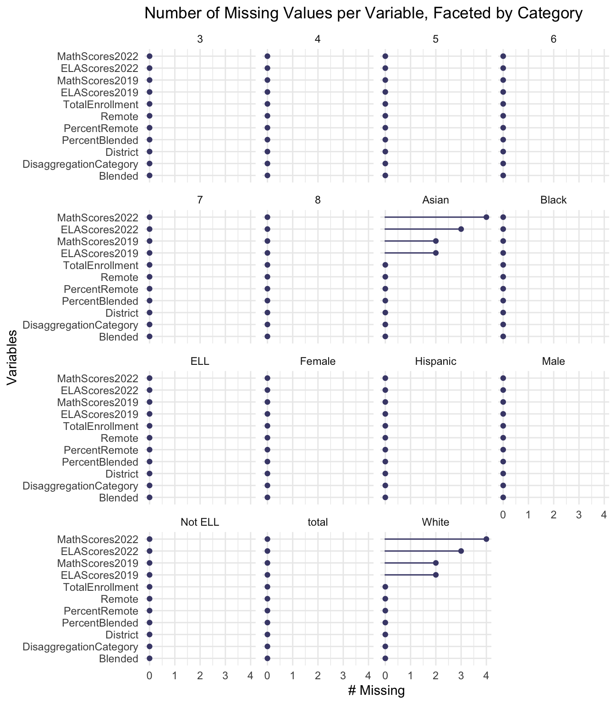
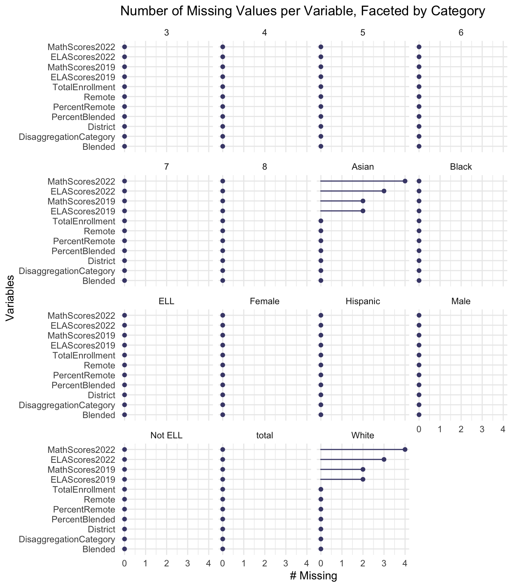

Chapter 4 Results


4.4 Section 2: Comparing same category across different districts

4.4.2 Two Cleveland dot plot with facets showing ethnicity and grade
 
### Parallel coordinates plot

### Parallel coordinates plot
 ### Boxplot
### Boxplot
## X District DisaggregationCategory Category MathScores2019 ELAScores2019 MathScores2022 ELAScores2022
## 1 1 1 English Language Learner Status ELL 604.9018 599.7471 604.1670 602.5225
## 2 2 1 English Language Learner Status Not ELL 603.9572 606.1178 600.6649 605.5363
## 3 3 1 Gender Female 604.9930 608.8980 601.5093 608.1357
## 4 4 1 Gender Male 603.3073 601.7765 600.9800 602.3959
## 5 11 1 Race or Ethnicity Asian 620.4417 615.7169 619.1185 617.1971
## 6 12 1 Race or Ethnicity Black 588.9459 592.7304 583.5601 592.0368
## 7 13 1 Race or Ethnicity Hispanic 594.5937 596.7120 589.3837 595.5388
## 8 14 1 Race or Ethnicity White 616.5199 619.0826 614.8779 618.2669
## 9 16 2 English Language Learner Status ELL 611.3389 605.9350 607.3047 608.1650
## 10 17 2 English Language Learner Status Not ELL 614.2175 614.8089 610.3735 614.6541
## 11 18 2 Gender Female 614.1697 616.2384 609.6794 616.4497
## 12 19 2 Gender Male 613.2497 610.5370 610.0605 610.7980
## 13 26 2 Race or Ethnicity Asian 620.2202 615.4730 617.3346 616.5472
## 14 27 2 Race or Ethnicity Black 593.4431 596.5732 588.1017 597.6966
## 15 28 2 Race or Ethnicity Hispanic 600.5587 603.8031 596.3391 604.2097
## 16 29 2 Race or Ethnicity White 617.4376 617.8622 612.9385 617.3960
## 17 31 3 English Language Learner Status ELL 598.4135 596.2383 595.0246 599.6617
## 18 32 3 English Language Learner Status Not ELL 608.6087 610.6342 604.9301 610.4438
## 19 33 3 Gender Female 608.3495 612.2899 603.7236 612.4916
## 20 34 3 Gender Male 606.4522 605.8451 604.0573 606.4034
## 21 41 3 Race or Ethnicity Asian 624.7859 622.8637 621.5462 622.5336
## 22 42 3 Race or Ethnicity Black 591.7775 595.7955 585.9644 595.3739
## 23 43 3 Race or Ethnicity Hispanic 597.9114 599.2726 593.4042 600.5019
## 24 44 3 Race or Ethnicity White 619.5476 620.3736 616.2441 619.4577
## 25 46 4 English Language Learner Status ELL 591.6927 591.1173 590.3455 595.1760
## 26 47 4 English Language Learner Status Not ELL 597.6410 600.1111 593.9959 601.1654
## 27 48 4 Gender Female 597.0195 601.6653 593.4868 603.0276
## 28 49 4 Gender Male 595.8853 595.0245 592.9874 596.8025
## 29 56 4 Race or Ethnicity Asian 618.8974 617.6823 620.7826 620.2973
## 30 57 4 Race or Ethnicity Black 592.1085 595.0385 585.8938 595.1973
## 31 58 4 Race or Ethnicity Hispanic 594.2591 595.9112 590.3919 597.5307
## 32 59 4 Race or Ethnicity White 613.4278 614.7500 612.4365 616.1218
## 33 61 5 English Language Learner Status ELL 587.5302 585.3296 584.0000 587.1906
## 34 62 5 English Language Learner Status Not ELL 590.5347 593.8044 584.7448 593.9175
## 35 63 5 Gender Female 590.4335 596.0195 584.4767 595.7904
## 36 64 5 Gender Male 589.5566 589.1476 584.7145 590.4029
## 37 71 5 Race or Ethnicity Asian 605.9063 602.4950 602.4815 607.6304
## 38 72 5 Race or Ethnicity Black 587.0829 590.6773 580.7198 590.0436
## 39 73 5 Race or Ethnicity Hispanic 590.4233 591.9289 585.0975 592.1249
## 40 74 5 Race or Ethnicity White 605.1895 605.1330 600.5625 608.7157
## 41 76 6 English Language Learner Status ELL 591.6419 588.8370 586.1831 589.0444
## 42 77 6 English Language Learner Status Not ELL 601.4272 601.5717 594.4853 600.6385
## 43 78 6 Gender Female 597.4783 599.0425 590.9586 599.2652
## 44 79 6 Gender Male 596.1712 592.8729 591.0125 593.0505
## 45 86 6 Race or Ethnicity Asian 610.1735 607.3750 604.7363 603.6701
## 46 87 6 Race or Ethnicity Black 593.3877 594.7042 585.4006 593.5625
## 47 88 6 Race or Ethnicity Hispanic 595.7880 594.4806 589.5352 594.4513
## 48 89 6 Race or Ethnicity White 611.0679 612.6029 605.4629 610.9756
## 49 91 7 English Language Learner Status ELL 590.2043 588.8649 584.1029 589.7368
## 50 92 7 English Language Learner Status Not ELL 590.3521 593.1875 584.9353 593.3364
## 51 93 7 Gender Female 591.2142 595.7219 584.4330 595.1354
## 52 94 7 Gender Male 589.4914 588.6308 584.9466 589.8171
## 53 101 7 Race or Ethnicity Asian 599.8611 592.9452 584.5931 592.2535
## 54 102 7 Race or Ethnicity Black 587.9516 591.2201 582.7606 592.1387
## 55 103 7 Race or Ethnicity Hispanic 591.0363 592.2839 585.3284 592.4593
## 56 104 7 Race or Ethnicity White 592.4563 590.4762 584.5931 592.2535
## 57 106 8 English Language Learner Status ELL 592.1025 587.6454 584.2118 589.0432
## 58 107 8 English Language Learner Status Not ELL 596.5025 596.1717 589.0695 595.6459
## 59 108 8 Gender Female 596.2411 597.5824 587.9238 597.4925
## 60 109 8 Gender Male 594.7525 591.1992 587.7761 591.0080
## 61 116 8 Race or Ethnicity Asian 611.8716 606.8003 603.8739 607.3796
## 62 117 8 Race or Ethnicity Black 590.8954 591.3187 583.2673 590.0932
## 63 118 8 Race or Ethnicity Hispanic 594.5393 593.4851 586.5915 593.0520
## 64 119 8 Race or Ethnicity White 602.2751 599.1956 594.9783 601.2844
## 65 121 9 English Language Learner Status ELL 589.9734 587.6724 585.1616 589.8039
## 66 122 9 English Language Learner Status Not ELL 593.3051 593.8855 586.8889 593.8948
## 67 123 9 Gender Female 593.8448 595.7076 586.8824 595.8253
## 68 124 9 Gender Male 590.3059 587.8360 585.6507 589.2614
## 69 131 9 Race or Ethnicity Asian 606.1445 602.3202 601.5000 602.7328
## 70 132 9 Race or Ethnicity Black 591.2605 591.8166 585.2483 592.6934
## 71 133 9 Race or Ethnicity Hispanic 592.0808 591.3906 586.3253 592.1773
## TotalEnrollment Blended PercentBlended Remote PercentRemote remote_cat
## 1 908 235 25.9 673 74.1 High
## 2 9641 2800 29.0 6841 71.0 Middle
## 3 5042 1455 28.9 3587 71.1 Middle
## 4 5507 1580 28.7 3927 71.3 Middle
## 5 2198 447 20.3 1751 79.7 High
## 6 1580 454 28.7 1126 71.3 Middle
## 7 4349 1241 28.5 3108 71.5 Middle
## 8 1949 725 37.2 1224 62.8 Middle
## 9 4805 1575 32.8 3230 67.2 Middle
## 10 54489 17710 32.5 36779 67.5 Middle
## 11 30930 9741 31.5 21189 68.5 Middle
## 12 28364 9544 33.6 18820 66.4 Middle
## 13 13105 2865 21.9 10240 78.1 High
## 14 8256 2030 24.6 6226 75.4 High
## 15 19530 4700 24.1 14830 75.9 High
## 16 15265 8344 54.7 6921 45.3 Low
## 17 941 388 41.2 553 58.8 Low
## 18 19424 8137 41.9 11287 58.1 Low
## 19 11026 4496 40.8 6530 59.2 Low
## 20 9339 4029 43.1 5310 56.9 Low
## 21 1972 769 39.0 1203 61.0 Middle
## 22 3881 1228 31.6 2653 68.4 Middle
## 23 6593 1986 30.1 4607 69.9 Middle
## 24 6523 3844 58.9 2679 41.1 Low
## 25 1187 492 41.4 695 58.6 Low
## 26 10547 3237 30.7 7310 69.3 Middle
## 27 6125 1828 29.8 4297 70.2 Middle
## 28 5609 1901 33.9 3708 66.1 Middle
## 29 1153 191 16.6 962 83.4 High
## 30 2751 871 31.7 1880 68.3 Middle
## 31 6872 2278 33.1 4594 66.9 Middle
## 32 612 264 43.1 348 56.9 Low
## 33 786 290 36.9 496 63.1 Middle
## 34 8462 2224 26.3 6238 73.7 High
## 35 4278 1218 28.5 3060 71.5 Middle
## 36 4970 1296 26.1 3674 73.9 High
## 37 363 65 17.9 298 82.1 High
## 38 4229 1159 27.4 3070 72.6 High
## 39 3756 998 26.6 2758 73.4 High
## 40 623 227 36.4 396 63.6 Middle
## 41 4957 1737 35.0 3220 65.0 Middle
## 42 14184 4025 28.4 10159 71.6 Middle
## 43 9374 2731 29.1 6643 70.9 Middle
## 44 9767 3031 31.0 6736 69.0 Middle
## 45 298 91 30.5 207 69.5 Middle
## 46 1375 293 21.3 1082 78.7 High
## 47 16061 4646 28.9 11415 71.1 Middle
## 48 1104 601 54.4 503 45.6 Low
## 49 2671 1214 45.5 1457 54.5 Low
## 50 14000 4391 31.4 9609 68.6 Middle
## 51 7791 2543 32.6 5248 67.4 Middle
## 52 8880 3062 34.5 5818 65.5 Middle
## 53 197 46 23.4 151 76.6 High
## 54 4329 1471 34.0 2858 66.0 Middle
## 55 11621 3921 33.7 7700 66.3 Middle
## 56 266 91 34.2 175 65.8 Middle
## 57 3492 1359 38.9 2133 61.1 Middle
## 58 20956 5592 26.7 15364 73.3 High
## 59 11960 3353 28.0 8607 72.0 High
## 60 12488 3598 28.8 8890 71.2 Middle
## 61 1687 278 16.5 1409 83.5 High
## 62 5013 1523 30.4 3490 69.6 Middle
## 63 15939 4589 28.8 11350 71.2 Middle
## 64 1383 463 33.5 920 66.5 Middle
## 65 6532 2464 37.7 4068 62.3 Middle
## 66 22585 6446 28.5 16139 71.5 Middle
## 67 14442 4345 30.1 10097 69.9 Middle
## 68 14675 4565 31.1 10110 68.9 Middle
## 69 404 118 29.2 286 70.8 Middle
## 70 7633 2593 34.0 5040 66.0 Middle
## 71 20379 5971 29.3 14408 70.7 Middle
## [ reached 'max' / getOption("max.print") -- omitted 185 rows ]